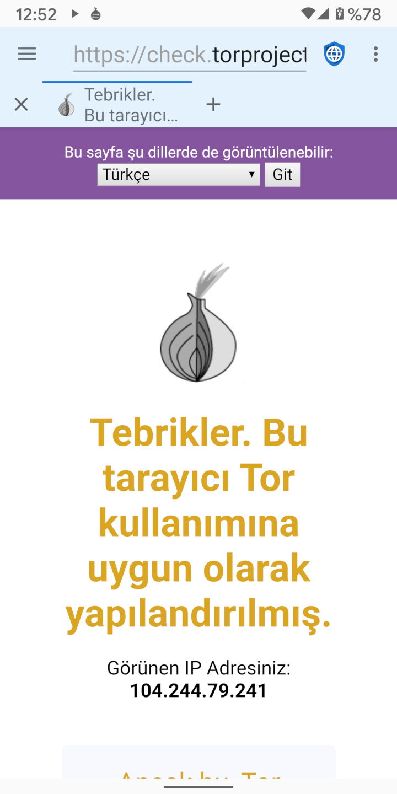

İnternet gizliliğini ihlal etmek isteyen iki genel kötü oyuncu kategorisi vardır: İSS’lere (İnternet Servis Sağlayıcıları) erişimi olan kötü niyetli hükümetler ve sosyal ve reklam ağlarını yöneten mega şirketler. Proxies like TOR (The Onion Router) and I2P (the Invisible Internet Project) are useful in protecting privacy from malicious governments (which spy on traffic in transit) but not from mega corporations (which embed malicious code on web servers).
Kötü niyetli hükümetler, sık sık muhalifleri ve aktivistleri cezalandırmak için kendi vatandaşlarını gözetler. Bunu genellikle yerel İSS’leri kullanarak ve onları, tüm kullanıcıların internet ziyaretlerinde kullandıkları IP adresleri gösteren bilgileri ifşa etmeye zorlayarak yaparlar. Layered proxies are designed to defeat this infringement of privacy by encrypting the traffic from a user’s device and routing it through multiple servers on the internet before sending it on to the final destination. This means that no individual ISP, server, or website, can know both the IP address of the user’s device and the IP address of the final web server. Malicious governments and the ISPs they control cannot tell which web servers a user is accessing, although they can tell that the user is using a layered proxy service. In some parts of the world, using proxies could be construed as an evidence of illegal behavior (“If you didn’t have anything to hide you wouldn’t be encrypting your traffic”) and users could be punished because governments assume they are doing something that is prohibited. Thus, proxies can be helpful, but they aren’t a panacea.
Bir kullanıcı bir web sunucusuna bağlandığında, web sunucusu kullanıcının IP adresini görebilir. Mükemmel bir teknik olmasa da, IP adresleri makul bir doğrulukla fiziksel adreslere dönüştürülebilir. Küçük web sunucuları, kendilerini ziyaret eden kullanıcılarının konumlarını belirlemek için IP adreslerine genel anlamda güvenirler. Proxies are a good solution to mask the user’s location from these servers. Ancak, sosyal medya ve reklam ağlarına sahip büyük mega kuruluşlar, cihazlar ve IP adresler üzerinden kullanıcıları izlemek için tüm bilgileri kullanır. Bu profiller, JavaScript, çerezler, izleme kimlikleri ve browser fingerprinting (tarayıcı tanılama) dahil olmak üzere kullanıcıları tanımlamak için çeşitli teknikleri kullanır. İnternetteki web sitelerinin büyük çoğunluğu ya ana ağlardan birinden bir reklam yüklediğinden ya da JavaScript ile ilişkilendirilen sosyal medya simgelerini yerleştirdiklerinden dolayı, mega şirketler, hemen hemen her çevrimiçi kullanıcı için profil oluşturup internet aktivitelerini ilgisi olmayan sitelerden bile takip edebilirler.
Ziyaret edilen her siteyi, satın alınan her şeyi, satın almak için kullanılan her kredi kartını, eşyaların kargolandığı her adresi ve internete yüklenen her fotoğrafın GPS metaverilerini izlerler. Bu sayede, bir kullanıcının yaşı, cinsiyeti, medeni hali, adresi, politik görüşü, dini görüşü, aile çevresi, evcil hayvan sayısı ve elde edebildikleri her şey hakkında bir profil oluştururlar. Hatta yerel mağazalardan kredi kart işlem veri tabanlarını satın alırlar, böylece oluşturdukları profillerdeki kullanıcıların çevrimdışı satın alma modellerini de takip edebilirler. Because they already have much more accurate address information about a user than an IP address discloses, proxies provides no real privacy protection against mega corporations.
Mega şirketlere karşı en iyi gizlilik koruması, reklamları engellemek, JavaScript’i, DOM depolamayı ve çerezleri devre dışı bırakıp web gezintisi yapmak ve fingerprint yapılması zor olan bir tarayıcı kullanmak olacaktır.
Despite their limitations, proxies can be useful in some circumstances. Tor and I2P have Android apps that make it easy to use their proxy networks. When proxying is turned on in Clear Browser, the app bar will have a light blue background instead of the default light grey. Because traffic is being routed through several proxy nodes, using a layered proxy is often much slower than connecting directly to the internet.
